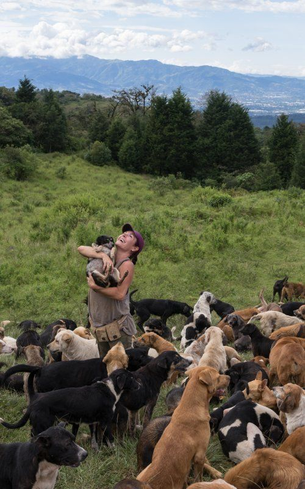
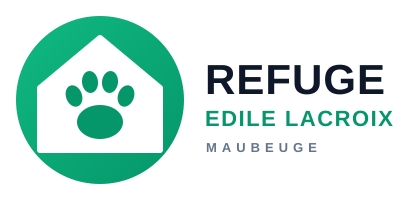

DONNÉES ACADÉMIQUES SAE 1.06 — ÉTUDE DE STRUCTURE LOCALE
<<<<<<< Updated upstream
 >>>>>>> Stashed changes
>>>>>>> Stashed changes

=======
>>>>>>> Stashed changes
Protection Animale Territoriale
Solidarité & engagement communautaire
Présence active contribuant au bien-être animal et à la cohésion sociale sur le bassin de Maubeuge avec le soutien de bénévoles dévoués.
+150
Adoptions / an
35
Bénévoles
100%
Engagé local
<<<<<<< Updated upstream
 >>>>>>> Stashed changes
>>>>>>> Stashed changes

=======
>>>>>>> Stashed changes
🏢 Organisation Territoriale
Refuge Edile Lacroix
Protection et bien-être animal sur le bassin maubeugeois
Identité & Coordonnées
Nom officiel
Refuge Edile Lacroix de Maubeuge
Secteur
Santé & Protection Animale
📍 Adresse
Les Prés du Saussoir, 59600 - Maubeuge
☎ Téléphone
03 27 65 01 13
✉ Courriel
refuge-edilacroix59600@orange.fr
🌐 Site officiel
refuge-edilelacroix.fr ↗
Missions & Activités
Notre association protège et prend soin des animaux qui vivent dehors et n’ont personne pour s’occuper d’eux. Songez à adopter, vous pourrez changer une vie !
- 1 Accompagnement & adoption : Sensibilisation à la stérilisation, soins vétérinaires et placement responsable des animaux recueillis.
- 2 Refuge & accueil d'urgence : Prise en charge bienveillante des animaux abandonnés ou en situation de détresse.
- 3 Sensibilisation citoyenne : Campagnes d'information et partenariats scolaires pour le respect de la faune locale.